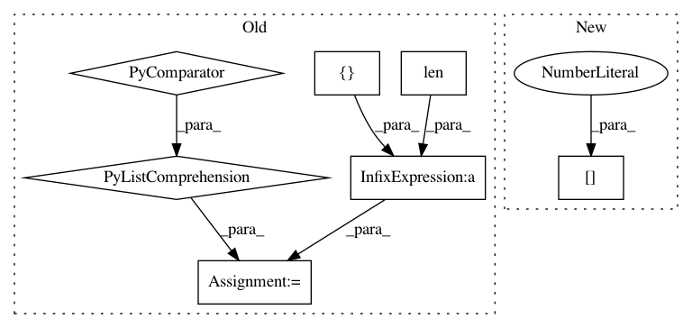

2df9a66ac40d1017792b1c93f34e47e214726d7d,demo/load_model/load_and_pool.py,,,#,9
Before Change
token = line.strip()
token_dict[token] = len(token_dict)
token_input = np.asarray([[token_dict[token] for token in tokens] + [0] * (512 - len(tokens))])
seg_input = np.asarray([[0] * len(tokens) + [0] * (512 - len(tokens))])
print("Inputs:", token_input[0][:len(tokens)])
predicts = model.predict([token_input, seg_input])[0]
print("Pooled:", predicts.tolist()[:5])
After Change
print("Tokens:", tokens)
indices, segments = tokenizer.encode(first="语言模型", max_len=512)
predicts = model.predict([np.array([indices]), np.array([segments])])[0]
print("Pooled:", predicts.tolist()[:5])
In pattern: SUPERPATTERN
Frequency: 3
Non-data size: 7
Instances
Project Name: CyberZHG/keras-bert
Commit Name: 2df9a66ac40d1017792b1c93f34e47e214726d7d
Time: 2019-03-18
Author: CyberZHG@gmail.com
File Name: demo/load_model/load_and_pool.py
Class Name:
Method Name:
Project Name: CyberZHG/keras-bert
Commit Name: 2df9a66ac40d1017792b1c93f34e47e214726d7d
Time: 2019-03-18
Author: CyberZHG@gmail.com
File Name: demo/load_model/load_and_extract.py
Class Name:
Method Name:
Project Name: apple/coremltools
Commit Name: 2b7f4471e764dd4b1a924837b6f515ad7e8a294a
Time: 2019-10-03
Author: gdawer@apple.com
File Name: coremltools/converters/nnssa/coreml/ssa_converter.py
Class Name: SSAConverter
Method Name: _convert_slice